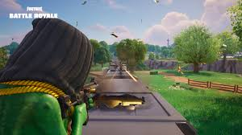
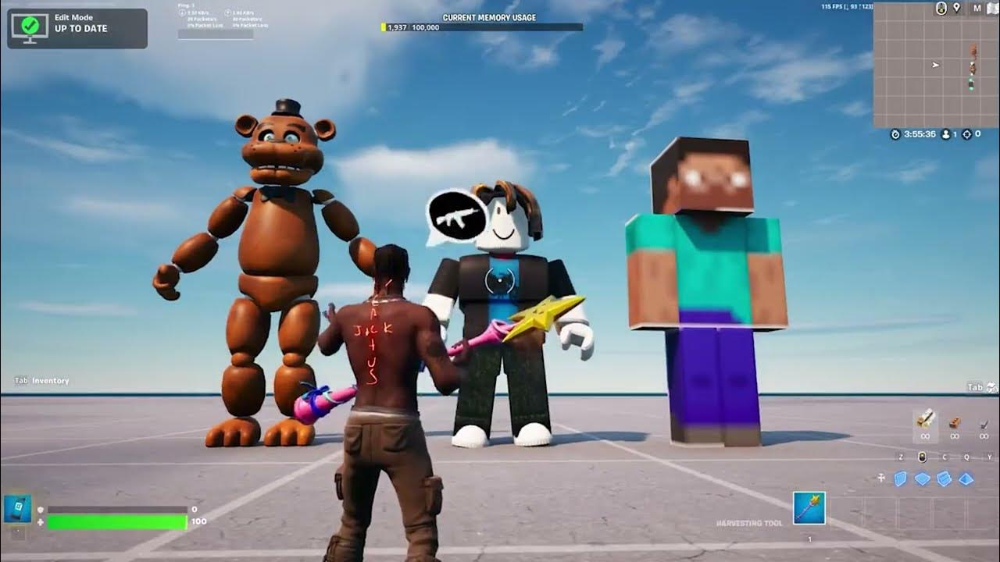

Explora las Diferentes Experiencias de Fortnite
Fortnite ofrece una gran variedad de modos de juego para todo tipo de jugadores. Desde intensas batallas en solitario hasta colaboraciones estratégicas con amigos, el juego tiene opciones para todos los gustos.
Battle Royale
Es un juego de tipo batalla real en el que compiten hasta cien jugadores en solitario, dúos, tríos o escuadrones. Los jugadores saltan de un autobús que cruza el mapa en el momento que deseen, y empiezan sin armas. Cuando aterrizan, deben buscar armas, objetos útiles y recursos, evitando que los maten mientras atacan a otros jugadores. La acción se divide en rondas con una duración determinada. Al acabar cada ronda, el área segura del mapa (la zona) se reduce en tamaño debido a una tormenta en ciernes; los jugadores que están fuera de esa área segura (la zona) reciben daño y pueden morir a causa de ella. Esto obliga a los jugadores a estar en espacios cada vez más cerrados y fomenta los combates entre jugadores. El último jugador o escuadrón vivo es el ganador de la partida. Durante el Capítulo 3 se estrenó un modo de juego denominado Cero Construcción, el cual tiene el mismo funcionamiento que el modo de juego Battle Royal, pero los jugadores no pueden construir estructuras.
Salvar el Mundo
Está diseñado como un juego de jugador contra entorno, con cuatro jugadores que cooperan para alcanzar un objetivo común en varias misiones. El juego se desarrolla después de que una tormenta mortal aparece en toda la Tierra, provocando que el 98% de la población desaparezca y los sobrevivientes sean atacados por cáscaras similares a zombis. Los jugadores asumen el papel de comandantes de refugios tipo base, recogen recursos, salvan sobrevivientes y defienden equipos que ayudan a recopilar datos sobre la tormenta o a hacer retroceder la tormenta. Desde las misiones, los jugadores reciben una serie de elementos en el juego, que incluyen personajes tipo héroe, esquemas de armas y trampas y sobrevivientes, todos los cuales pueden ser nivelados a través de la experiencia adquirida para mejorar sus atributos. .

Modo Creativo
Es un modo en el cual el jugador puede construir su propia isla con amigos de la forma en la que ellos deseen. En este modo hay estructuras predeterminadas para facilitar el trabajo de la construcción además de piezas adicionales solo disponibles en ese modo de juego. Estos modos de juego le dan la posibilidad al jugador de usar un pico para derribar estructuras existentes en el mapa para recolectar recursos básicos (madera, ladrillo o piedra y acero o metal), a partir de los cuales pueden construir piezas de fortificación, como paredes, escaleras, suelos y conos. Tales piezas de fortificación se pueden editar para incluir otras características, como ventanas o puertas. Los materiales utilizados tienen diferentes propiedades de durabilidad y se pueden actualizar a variantes más fuertes utilizando más materiales del mismo tipo.9 En septiembre del 2021 se cambió el menú del juego por uno llamado "descubrir" para impulsar las creaciones.
